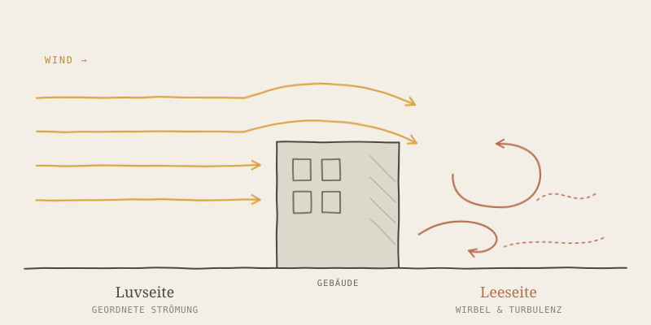
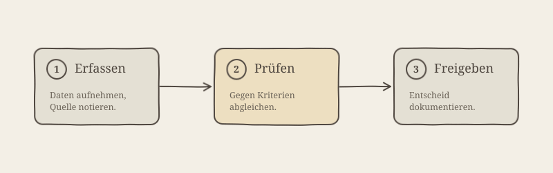

verstande = skizzenhaft, fixe Elfenbein-Papier-Karte (das Papier IST der Stil). fiknow = clean & weich nach FINNOFLEET-Brandbook,
theme-adaptiv: Tinte = currentColor, transparenter Grund, Lime/Blau fix. Dasselbe SVG unten links (hell) und rechts (dunkel) — es flippt automatisch mit dem Theme.


Hinweis: Beide fiknow-Kästen oben zeigen dasselbe SVG (identisches Markup) — nur currentColor der Karte unterscheidet sich. So rendert <Figure> es in der App: ein Asset, automatisch theme-korrekt. Die Datei-Beispiele liegen in examples/*-clean-fiknow.svg.